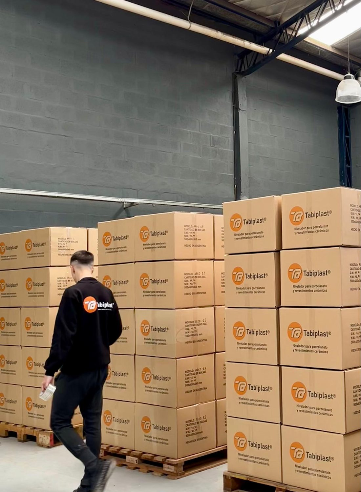
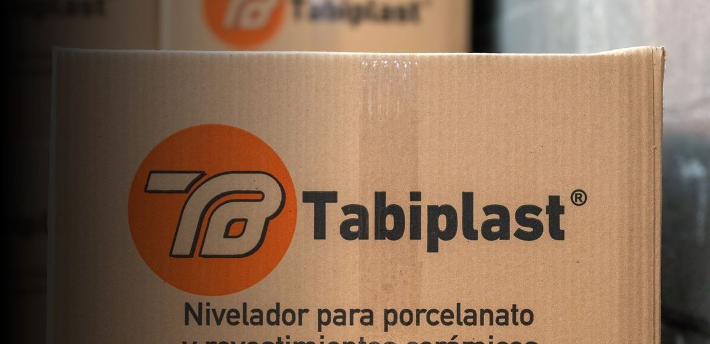

Gestión de campañas
Armado, seguimiento y ajuste en Google y Meta. Revisión de en qué se está yendo el presupuesto y corte de lo que no trae clientes.
Tabiplast fabrica un producto que el mercado busca y que ya valida. Falta capturar esa demanda, atenderla y medirla.

Creció la venta de materiales de construcción en septiembre contra el mismo mes del año pasado
Puntaje y cantidad de reseñas en Google, hoy sin usar en ninguna pieza de comunicación
Conversiones medidas en la cuenta de Google Ads que está corriendo ahora mismo
El Índice Construya mide la venta de materiales de construcción al sector privado. Después de dos meses en rojo, septiembre dio un salto fuerte.
Variación interanual. Fuente: Índice Construya, Grupo Construya.
Si las ventas de Tabiplast se plancharon justo en esa ventana, el problema no es el contexto: esa demanda la está capturando otro.
Lo que no es fácil es contactarse con ustedes para poder comprar. No responden preguntas, ni acá ni en mercado libre ni por WhatsApp. Comentario público de una usuaria en el Instagram de Tabiplast, agosto 2026. Google lo tiene indexado y lo muestra como comentario visible en varias publicaciones.
Es un comentario de una sola persona y lo tomamos como lo que es: una señal, no una estadística.
Pero marca algo que define todo lo demás. Si hoy entran consultas y no se contestan a tiempo, poner pauta encima acelera la pérdida en vez de resolverla.
Por eso la atención entra primero, y entra dentro del trabajo.
El sitio tiene instalada la etiqueta de Google Ads y los anuncios aparecen en búsquedas como "niveladores para porcelanato". Hasta ahí, bien. Lo que falta es la otra mitad: ninguna analítica instalada y ningún pedido de presupuesto registrado como lo que es, una oportunidad de venta.
En concreto: hoy se paga por clics sin saber cuáles terminan en un pedido. No se puede saber qué búsqueda trae clientes y cuál se lleva el presupuesto sin devolver nada.
Y Google no puede priorizar lo que no mide, así que la campaña termina compitiendo por clics baratos en lugar de por compradores.
Son dos trabajos distintos y resuelven momentos distintos del negocio. Arrancan juntos, pero el peso no es el mismo.
La demanda que ya existe
Todos los días hay gente buscando niveladores, ladrillos de vidrio y proveedores mayoristas. Ahí no hay que convencer a nadie de que necesita el producto: hay que estar, y hay que estar antes que el revendedor.
La demanda que todavía no apareció
Acá no venimos a producir contenido nuevo. El material que ya se produce hoy llega a poco más de novecientas personas, casi todas conocidas. Con pauta atrás, ese mismo material empieza a buscar colocadores y corralones nuevos.
Esto no se cobra aparte. Va adentro del trabajo mensual porque sin esto lo demás no se puede evaluar.

Dejar el sitio en condiciones de registrar qué pasa cuando alguien entra: qué mira, desde qué anuncio llegó, y sobre todo cuándo pide un presupuesto o llama por teléfono.
Que la consulta que entra no se pierda. Esto no reemplaza al equipo comercial: lo ordena para que llegue filtrada y con los datos mínimos.
Armado, seguimiento y ajuste en Google y Meta. Revisión de en qué se está yendo el presupuesto y corte de lo que no trae clientes.
Redacción de los anuncios y adaptación del material existente a formato publicitario. Pruebas de ángulos distintos para ver cuál responde mejor.
Seguimiento del costo por consulta y por pedido de presupuesto, línea por línea, para mover el presupuesto hacia donde rinde.
Un informe claro de qué se invirtió, qué entró y qué se decidió. Sin planillas que haya que interpretar.
Acceso para ver los números cuando quieran, configurado con lo que a ustedes les sirva mirar, no con una vista fija igual para todos.
Reuniones de revisión para decidir juntos el rumbo. Y disponibilidad por WhatsApp en el medio, sin esperar a la reunión.
Las dejamos planteadas porque afectan el resultado, pero son decisiones de ustedes. Si quieren que las tomemos nosotros, se cotizan por separado.
El sitio no está preparado para aparecer en los resultados gratuitos de Google: le faltan los elementos básicos que el buscador necesita para entender de qué trata cada página. Hoy, cuando alguien busca el producto sin nombrar la marca, Tabiplast no aparece en la lista orgánica. Es el trabajo de retorno más lento, pero es el que después abarata la pauta.
En Mercado Libre la marca Tabiplast aparece en muchas publicaciones, y varias de las que más venden son de revendedores, no de la tienda oficial. Antes de empujar tráfico hacia ese canal hay que saber si eso es una decisión tomada para cuidar al corralón o si simplemente pasó. Cambia por completo hacia dónde conviene dirigir la inversión.
Equipamiento industrial, venta a fabricantes
Fabricante que vendía por recomendación y hoy recibe consultas todos los días por Google y Meta. En el último mes el volumen subió 26% y el costo por consulta bajó 19%. Mismo esquema que proponemos acá: demanda que ya existía y no se estaba capturando.
Comercio, Google y Meta
Llegaron con la medición rota, igual que la situación actual de Tabiplast. Primero se ordenó el seguimiento y después se tocaron las campañas. Las ventas por Google pasaron de 17 a 35 en un mes, con menos inversión que el mes anterior.
Lo de arriba es el trabajo de Dilema. El presupuesto que se pone en Google y en Meta se paga directo a cada plataforma y queda siempre a nombre de ustedes.
No ponemos una cifra todavía a propósito. Ese número se define con ustedes después de ver márgenes, ticket promedio y qué línea conviene empujar primero. Tirar un monto antes de eso sería adivinar.
Los dos canales empiezan juntos, pero el peso del presupuesto arranca cargado en Google, porque ahí la demanda ya existe y el retorno se ve antes.
Meta arranca más abajo mientras junta los datos propios que hoy no hay. A medida que se vea qué devuelve cada uno, definimos juntos cómo repartirlo.
Nos pasan los accesos de Google y Meta, el sitio, y la información de su negocio que necesitamos para dimensionar.
Dejamos la medición y la atención funcionando antes de poner un peso en pauta.
Definimos juntos el presupuesto de plataformas y arrancan las campañas.